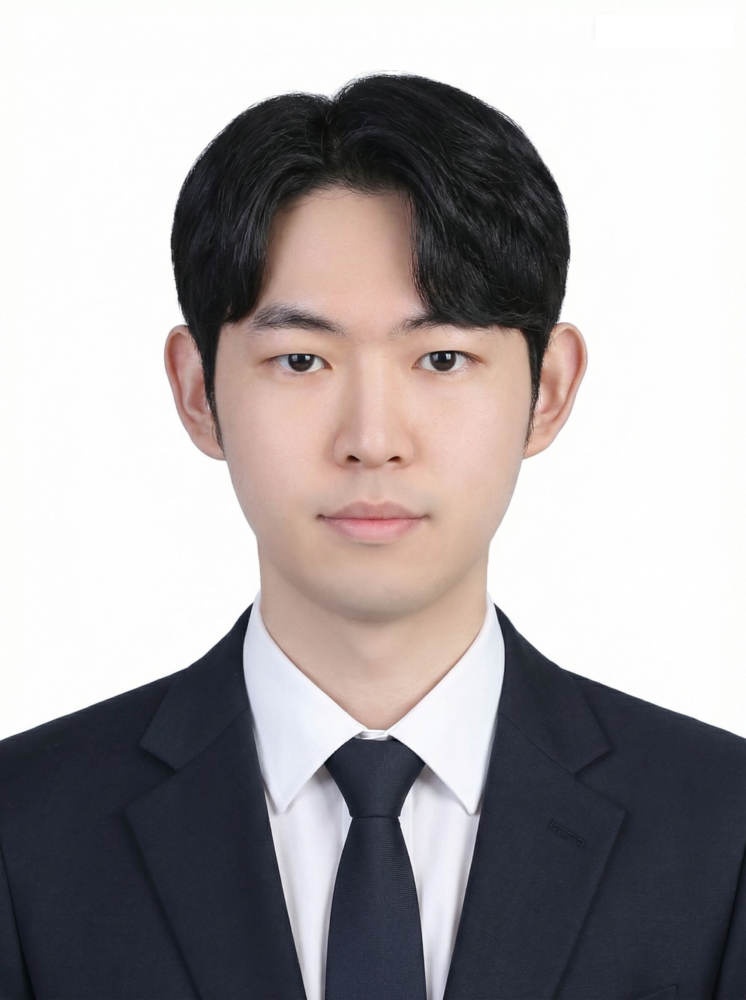
Byeongchan Kim (김병찬)
PhD Student (Department of Smart Cities)
March 1, 2026 ~ Present
Interests: Deep learning, Audio-Visual deepfake detection, AI Security

PhD Student (Department of Smart Cities)
March 1, 2026 ~ Present
Interests: Deep learning, Audio-Visual deepfake detection, AI Security
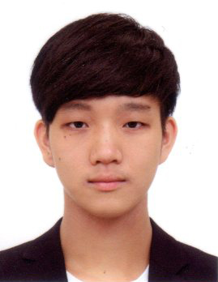
PhD Student (Department of Statistics and Data Science)
March 1, 2026 ~ Present
Interests: Deep learning, Bio-signal data analysis, Heart murmur detection, Semi-supervised Learning
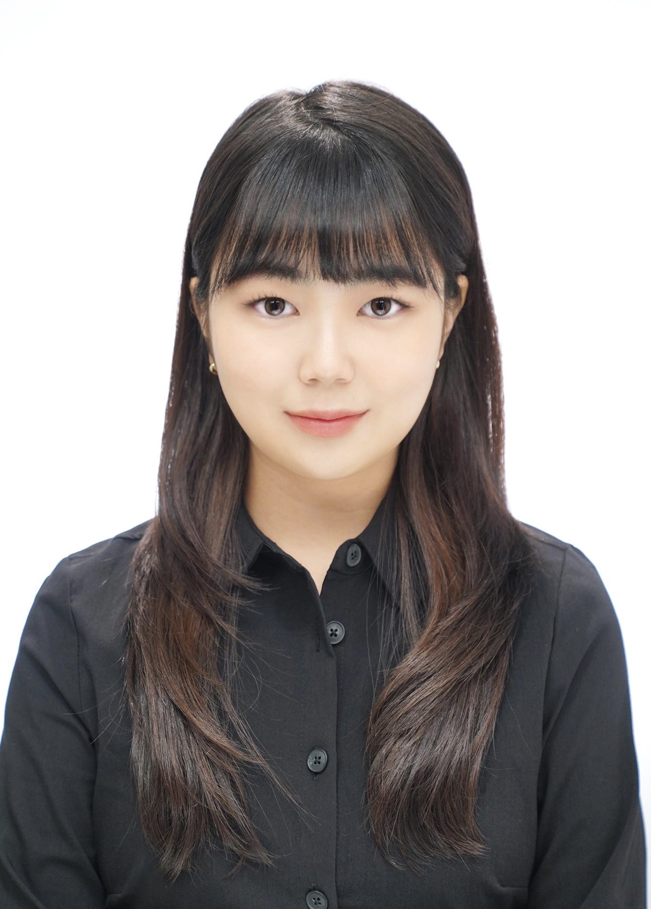
M.S. Researcher (Department of Smart Cities)
March 9, 2026 ~ Present
Interests: Deep learning, Audio-visual deepfake detection
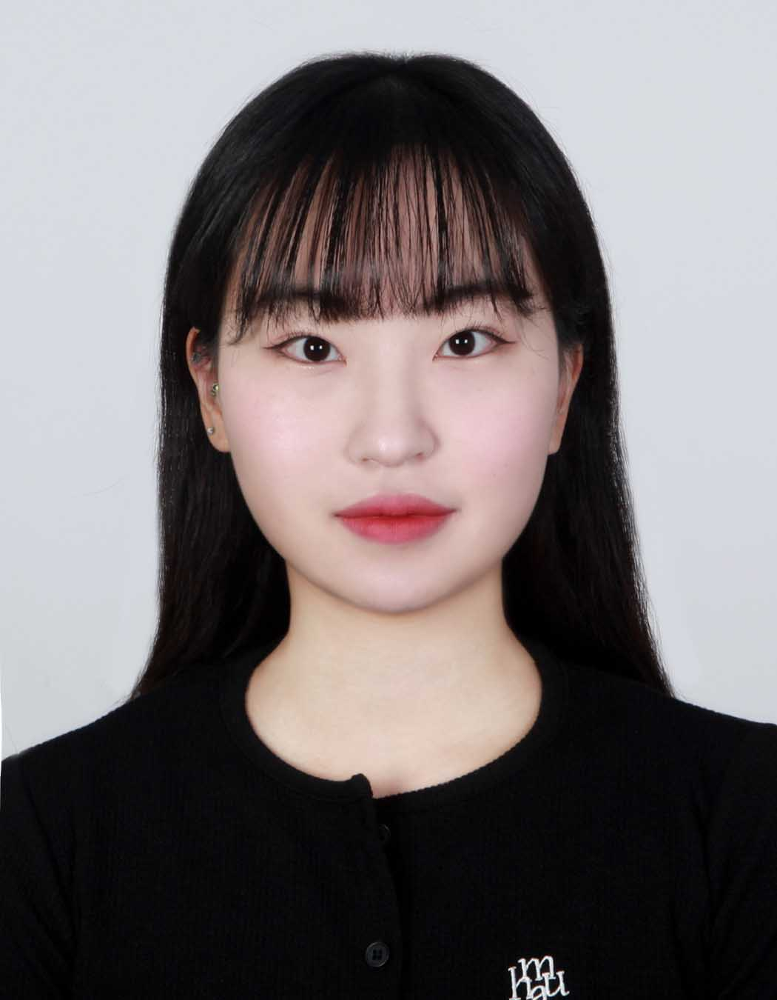
M.S. Student (Department of Statistics and Data Science)
March 1, 2025 ~ Present
Interests: Deep learning, Environmental sound deepfake detection, Speaker recognition
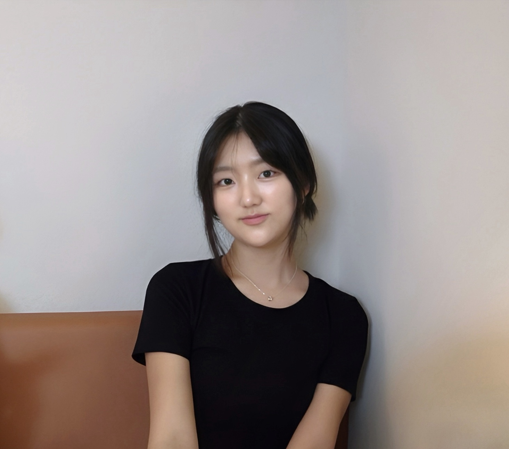
M.S. Student (Department of Smart Cities)
September 1, 2025 ~ Present
Interests: Deep learning, Large Language Models, Bio-signal data, Audio jailbreak
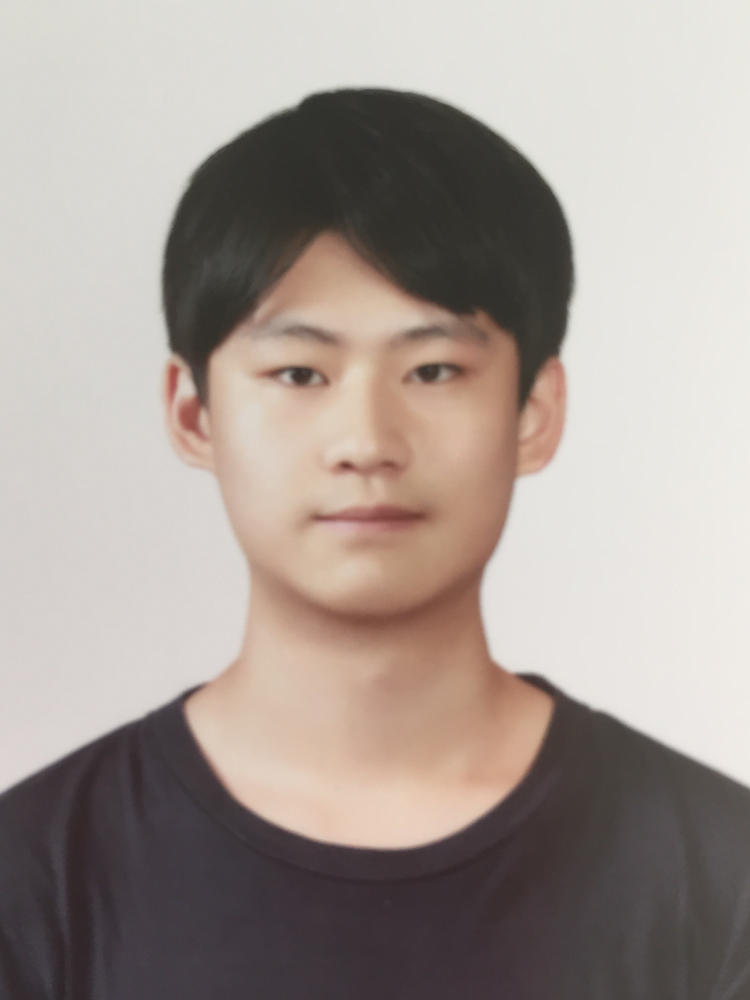
M.S. Student (Department of Statistics and Data Science)
September 1, 2025 ~ Present
Interests: Deep learning, Machine learning
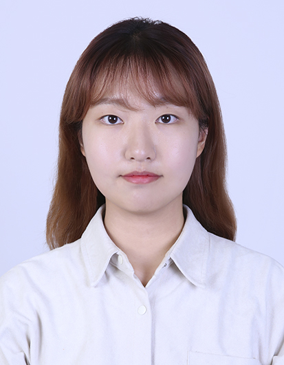
M.S. Student (Department of Statistics and Data Science)
March 1, 2026 ~ Present
Interests: Deep learning, Sound deepfake detection, AI security
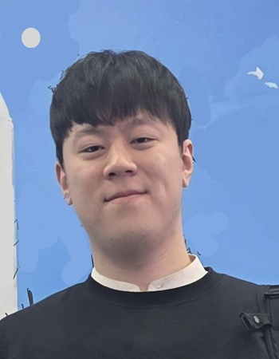
M.S. Student (Department of Statistics and Data Science)
March 1, 2026 ~ Present
Interests: Deep learning, Sound deepfake detection
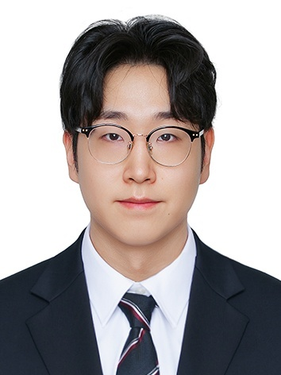
M.S. Student (Department of Statistics and Data Science)
March 1, 2026 ~ Present
Interests: Deep learning, Audio Vision Language Models, Audio Question Answering.
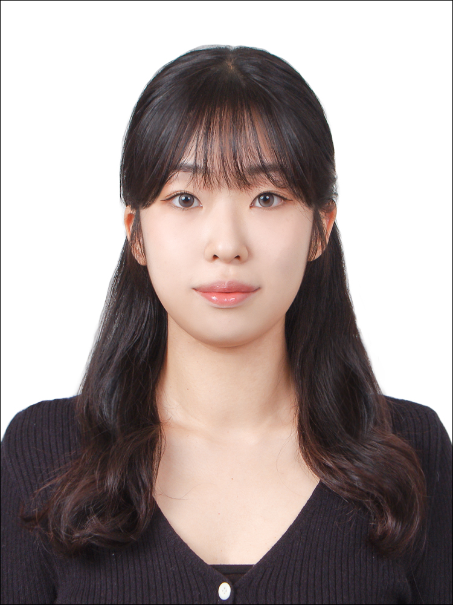
M.S. Student (Department of Smart Cities)
March 1, 2026 ~ Present
Interests: Deep learning, Biomedical data analysis, Statistical Genetics.
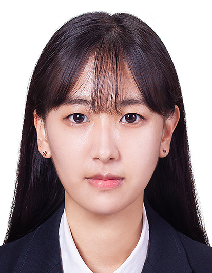
M.S. Student (Department of Statistics and Data Science)
September 1, 2026 ~ Present
Interests: Deep learning, Statistical Genetics, Biostatistics
|